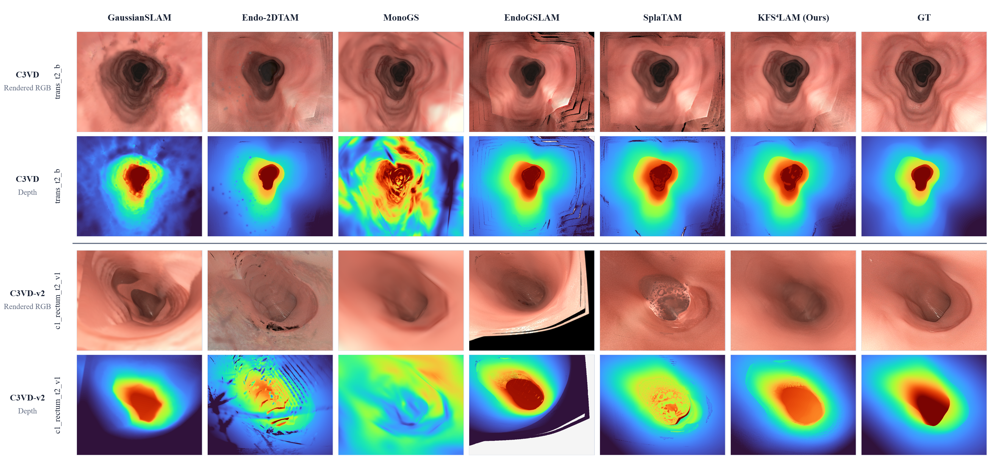
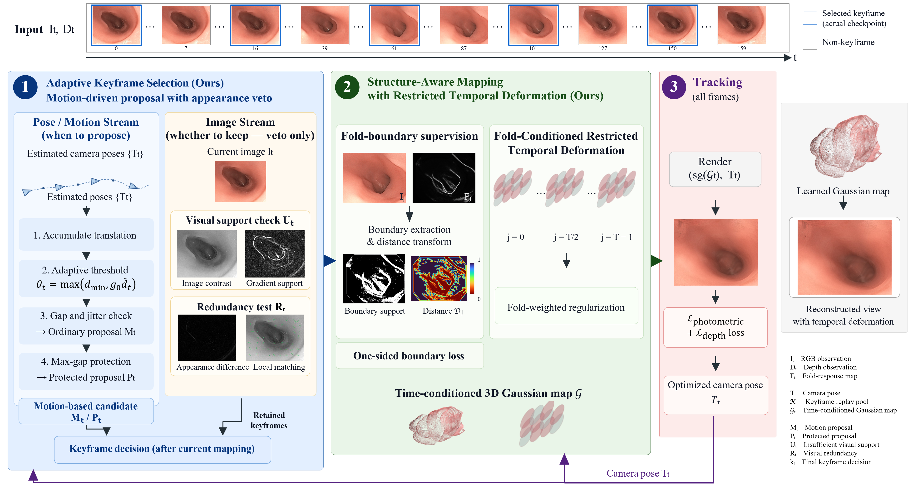

Qualitative - Videos
Compare synchronized RGB and depth across GaussianSLAM, Endo-2DTAM, MonoGS, EndoGSLAM, SplaTAM, KFS⁴LAM and GT. Below, follow the camera through an accumulating colored surface, compare estimated trajectories with GT, and inspect the current KFS⁴LAM render.
The surface accumulates local patches from rendered RGB-D observations as the camera advances. Gaps remain open; no global hole filling is applied. This is a final-checkpoint replay, not a recording of intermediate optimization states. Estimated trajectories are Sim3-aligned to GT.
Depth uses one shared color range per sequence; white denotes invalid depth. MonoGS depth is converted using its saved trajectory-scale alignment. Exact original frames are matched across methods. Playback is 12 fps and does not represent SLAM runtime.
Backbone comparison and run provenance
The trans_t2_c example uses the EndoGSLAM run associated with the trajectory illustration; the other three use the SplaTAM implementation. EndoGSLAM provides an additional backbone for evaluating whether the keyframe-selection and fold-supervision modules are applicable beyond SplaTAM.
Qualitative - Images

Quantitative Results
Common evaluation pool: 14 C3VD and 11 C3VD-v2 sequences. Trajectory and rendering protocols remain backbone-specific; depth values retain each source evaluator’s scale.
| Method | m ATE ↓ | m ARE ↓ | RPE-t ↓ | RPE-r ↓ | PSNR ↑ | SSIM ↑ | LPIPS ↓ | Depth RMSE ↓ |
|---|
The results are mixed across metrics and datasets; improvements are not uniform.
Method
KFS⁴LAM combines motion-driven keyframe proposals, appearance-based redundancy suppression, fold-boundary supervision and restricted temporal deformation for Gaussian mapping.

We also evaluate adaptive keyframe selection and fold supervision on EndoGSLAM to test their applicability to a different Gaussian SLAM backbone. Each augmented variant is compared with its corresponding backbone; these experiments assess transferability beyond SplaTAM, while the component ablations examine the contributions within the primary implementation.
Reproduce - Code
Browse the code and installation instructions
The reconstruction collection comprises 25 KFS⁴LAM sequence archives. Each archive contains Gaussian parameters, estimated poses, intrinsics, keyframe indices and a portable configuration. The archives also contain temporal deformation coefficients. Rendering saved poses does not require retraining or the source dataset.
python render_checkpoint.py --backbone splatam \ --checkpoint params.npz --frames all --stride 8 --output rendered
Install the code release dependencies first. RGB-D and fold responses are required for a new SLAM run; the original RGB-D dataset is required for evaluation against ground truth.
Anonymous checkpoint download hosting is not yet available. The page contains local figures and videos.